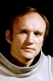

Country:United States, 104 minutes
Spoken languages:English
Genres:Horror
Director(s):Damiano Damiani
Writer(s):Tommy Lee Wallace, Dardano Sacchetti
Video Codec:Unknown
Number: 2379


Certification:R
Storyline:
Eager to start afresh, the unsuspecting couple of Anthony and Dolores Montelli, along with their four children, move into their dream house in Amityville. However, right from the very first night, strange paranormal experiences shatter the Montellis' fantasy, as the restless spirits of the dead and the new home's dark secrets open the unfathomable black portal of hell. Now, the family's older child, Sonny, has become the perfect vessel of destruction, as the invisible demonic forces claim his soul. Can Father Frank Adamsky cleanse the infernal Amityville House?
Cast: 


Medium: Original DVD,
Comments: Part of: The Amityville Horror Collection box
Loaned: No
Aspect ratio: Unknown